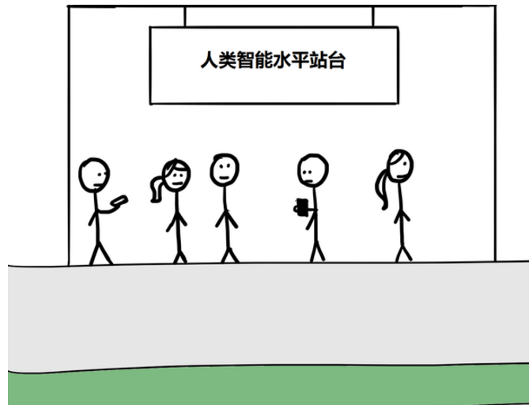
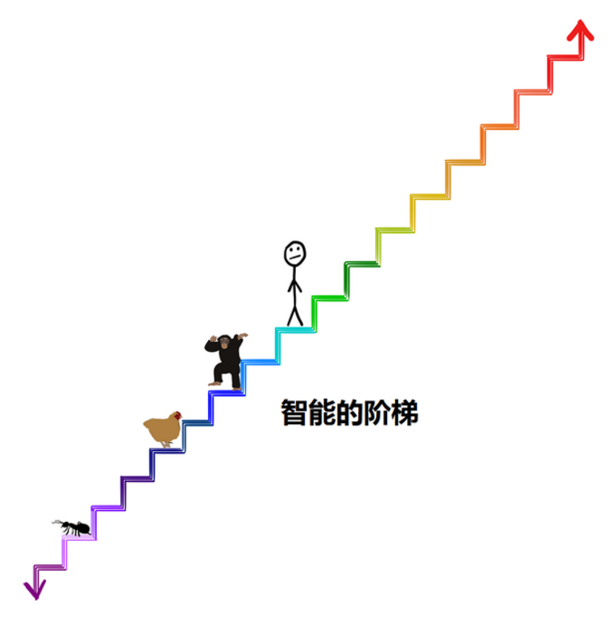

在思考人工智能的时候，往往最后将我引入的已经不再是科技领域而是所谓的哲学领域，是关于人类，关于本我，关于一切现实的抽象思考。或许正如电影《超能》里所描绘的，类似能100%开发人类大脑而产生的超人工智能所带来的力量是我们无法理解也是无法想象的(电影里所展现的科幻内容也仅仅局限于我们人类自我的想象)，我们所能赋予之的形容或许唯有“无所不能”，而这，不就是原始的我们所认为的“神”吗？或许，神并不仅仅是存在于我们的心中，传说中远古的造物之神也将被其所造之物再造，而这，不也恰恰是太级图所揭示的天理循环吗？
心里酝酿着要写一篇关于人工智能的文章已经有很长时间了，我所希望要介绍的并不只是什么是人工智能和现阶段的人工智能发展程度这样的科普类知识，也不只是奇点来临后传说中的超人工智能所可能带来的永生或毁灭，我真正想要表达的内容实在是太抽象，抽象到我竟无法轻易的用语言和文字表达出来，以致于无数次在键盘上敲击了开头却又止步于开头，而这一切其实都源于我对人工智能未来发展的困惑。最近，总算看到了一篇文章，非常清晰明白的介绍人工智能以及人工智能的发展将会带来的巨大变革，当中所涉及的内容可谓处处干货，总算是一解心头之惑，所以本着精华拿来主义的原则，在这里引用之。原文地址是：
http://waitbutwhy.com/2015/01/artificial-intelligence-revolution-1.html
http://waitbutwhy.com/2015/01/artificial-intelligence-revolution-2.html
原本是想自己花一些时间来翻译的，但是发现早有大神已经走在了我之前，在这里要感谢知乎-谢熊猫君的翻译，翻译的很生动：
https://zhuanlan.zhihu.com/p/19950456
下面将要介绍的内容将会一点点的给出这两个问题的答案：一是为什么说超人工智能会是无所不能的，二是为什么说这种无所不能的力量带来的结果是循环。具体的目录如下：
第一部分-为什么说超人工智能会是无所不能的
-人工智能是什么？
在智能手机普及之前，人们对人工智能的认识还停留在一个遥远的距离，认为人工智能这种只出现在科幻电影里的东西是一个神秘的未来的存在。就算到目前为止，当发现很多所谓的人类的精英阶层，那些科学家，那些大资本家，那些公认的聪明人都开始在不同的场合提到人工智能并严肃的讨论它对人类未来的影响时，你可能还是和我一样感觉到很困惑，这种困惑或许来自以下两点：
1. 习惯上我们总是把人工智能和科幻电影想到一起。星球大战、终结者、2001：太空漫游等等。电影是虚构的，那些电影角色也是虚构的，所以我们总是觉得人工智能本身也缺乏真实感。
2. 人工智能是个很宽泛的话题，在媒体和生活中已经被用滥了。从手机上的计算器到无人驾驶汽车，到人工智能的未来可能改变世界的重大变革，人工智能可以用来描绘很多东西，所以我们会有疑惑。
那么人工智能到底是什么呢？人工智能的概念很宽，在这里我们按照人工智能的能力将其分成三大类。
弱人工智能Artificial Narrow Intelligence (ANI): 弱人工智能是擅长于单个方面的人工智能。比如有能战胜李世石的阿尔法狗，但是它只会下围棋，你要问它怎样更好地在动作你的个人资产，它可能就不知道怎么回答了。
强人工智能Artificial General Intelligence (AGI): 人类级别的人工智能。强人工智能是指在各方面都能和人类比肩的人工智能，人类能干的脑力活它也都能干。创造强人工智能比创造弱人工智能难得多得多得多，至少我们现在还做不到。Linda Gottfredson教授把智能定义为“一种宽泛的心理能力，能够进行思考、计划、解决问题、抽象思维、理解复杂理念、快速学习和从经验中学习等操作。”基于这样的能力要求，强人工智能在进行这些操作时应该和人类一样得心应手。
超人工智能Artificial Superintelligence (ASI): 牛津哲学家，知名人工智能思想家Nick Bostrom把超级智能定义为“在几乎所有领域都比最聪明的人类大脑都聪明很多，包括科学创新、通识和社交技能。”超人工智能可以是各方面都比人类强一点，也可以是各方面都比人类强万亿倍的。超人工智能也正是为什么人工智能这个话题这么火热的缘故，而超人工智能也正是本文后面所要讨论的永生与毁灭以及人类终级命运的原因。
现在，人类已经掌握了弱人工智能。其实弱人工智能无处不在，人工智能革命是从弱人工智能，通过强人工智能，最终到达超人工智能的旅途。这段旅途中人类可能会生还下来，可能不会，但是无论如何，世界将变得完全不一样。
-目前人工智能的发展水平
我们现在所处的世界正是充满了弱人工智能的世界。弱人工智能指是在特定领域等同或者超过人类智能/效率的机器智能，我们来看一些常见的例子：
* 汽车上有很多的弱人工智能系统，从控制防抱死系统的电脑，到控制汽油注入参数的电脑。谷歌正在测试的无人驾驶车，就包括了很多弱人工智能，这些弱人工智能能够感知周围环境并作出反应。
* 你的手机也充满了弱人工智能系统。当你用地图软件导航，接受音乐电台推荐，查询明天的天气，和Siri聊天，以及其它很多很多应用，其实都是弱人工智能。
* 垃圾邮件过滤器是一种经典的弱人工智能——它一开始就加载了很多识别垃圾邮件的智能，并且它会学习并且根据你的使用而获得经验。智能室温调节也是一样，它能根据你的日常习惯来智能调节。
* 你在上网时候出现的各种其它电商网站的产品推荐，还有社交网站的好友推荐，这些都是弱人工智能的组成的，弱人工智能联网互相沟通，利用你的信息来进行推荐。网购时出现的“买这个商品的人还购买了”推荐，其实就是收集数百万用户行为然后产生信息来卖东西给你的弱人工智能。
* 谷歌翻译也是一种经典的人工智能——非常擅长单个领域。声音识别也是一种。很多软件利用这两种智能的合作，使得你能对着手机说中文，手机直接给你翻译成英文。
* 谷歌搜索是一个巨大的弱人工智能，背后是非常复杂的排序方法和内容检索。
* 这些还只是消费级产品的例子。军事、制造、金融（高频算法交易占到了美国股票交易的一半）等领域广泛运用各种复杂的弱人工智能。专业系统也有，比如帮助医生诊断疾病的系统，还有著名的IBM的华生，储存了大量事实数据，还能理解主持人的提问，在竞猜节目中能够战胜最厉害的参赛者。
现在的弱人工智能系统并不吓人。就算是最糟糕的情况，无非是代码没写好，程序出故障，造成了单独的灾难，比如造成停电、核电站故障、金融市场崩盘等等。虽然现在的弱人工智能没有威胁我们生存的能力，我们还是要怀着警惕的观点看待正在变得更加庞大和复杂的弱人工智能的生态。每一个弱人工智能的创新，都在给通往强人工智能和超人工智能的旅途添砖加瓦。用Aaron Saenz的观点，现在的弱人工智能，就是地球早期软泥中的氨基酸——没有动静的物质，突然之间就组成了生命。
-通往超人工智能之路
第一步，从弱人工智能到强人工智能。
为什么说这条路很难走？只有明白创造一个人类智能水平的电脑是多么不容易，才能让你真的理解人类的智能是多么不可思议。造摩天大楼、把人送入太空、明白宇宙大爆炸的细节——这些都比理解人类的大脑，并且创造个类似的东西要简单太多了。至今为止，人类的大脑是我们所知宇宙中最复杂的东西。
造一个能在瞬间算出十位数乘法的计算机——非常简单
造一个能分辨出一个动物是猫还是狗的计算机——极端困难
造一个能战胜世界象棋冠军的电脑——早就成功了
造一个能够读懂六岁小朋友的图片书中的文字，并且了解那些词汇意思的电脑——谷歌花了几十亿美元在做，还没做出来。
一些我们觉得困难的事情，比如微积分、金融市场策略、翻译等，对于电脑来说都太简单了。我们觉得容易的事情，比如视觉、动态、移动、直觉——对电脑来说太TM的难了。用计算机科学家Donald Knuth的说法，“人工智能已经在几乎所有需要思考的领域超过了人类，但是在那些人类和其它动物不需要思考就能完成的事情上，还差得很远。”
其实那些对我们来说很简单的事情，其实是很复杂的，它们看上去很简单，因为它们已经在动物进化的过程中经历了几亿年的优化了。当你举手拿一件东西的时候，你肩膀、手肘、手腕里的肌肉、肌腱和骨头，瞬间就进行了一组复杂的物理运作，这一切还配合着你的眼睛的运作，使得你的手能都在三维空间中进行直线运作。对你来说这一切轻而易举，因为在你脑中负责处理这些的“软件”已经很完美了。同样的，软件很难识别网站的验证码，不是因为软件太蠢，恰恰相反，是因为能够读懂验证码是件碉堡了的事情。
同样的，大数相乘、下棋等等，对于生物来说是很新的技能，我们还没有几亿年的世界来进化这些能力，所以电脑很轻易的就击败了我们。试想一下，如果让你写一个程序，是一个能做大数相乘的程序容易写，还是能够识别千千万万种字体和笔迹下书写的英文字母的程序难写？
比如看着下面这个图的时候，你和电脑都能识别出这是一个由两种颜色的小长方形组成的一个大长方形。
你和电脑打了个平手。接着我们把途中的黑色部分去除：
你可以轻易的描述图形中透明或不透明的圆柱和3D图形，但是电脑就看不出来了。电脑会描述出2D的阴影细节，但是人脑却能够把这些阴影所展现的深度、阴影混合、房屋灯光解读出来。再看下面这张图，电脑看到的是黑白灰，我们看到的却是一块全黑的石头：
而且，我们到现在谈的还是静态不变的信息。要想达到人类级别的智能，电脑必须要理解更高深的东西，比如微小的脸部表情变化，开心、放松、满足、满意、高兴这些类似情绪间的区别，以及为什么《布达佩斯大饭店》是好电影，而《富春山居图》是烂电影。
想想就很难吧？
我们要怎样才能达到这样的水平呢？
通往强人工智能的第一步：增加电脑处理速度
要达到强人工智能，肯定要满足的就是电脑硬件的运算能力。如果一个人工智能要像人脑一般聪明，它至少要能达到人脑的运算能力。
用来描述运算能力的单位叫作cps（calculations per second，每秒计算次数），要计算人脑的cps只要了解人脑中所有结构的最高cps，然后加起来就行了。
Kurzweil把对于一个结构的最大cps的专业估算，然后考虑这个结构占整个大脑的重量，做乘法，来得出人脑的cps。听起来不太靠谱，但是Kurzweil用了对于不同大脑区域的专业估算值，得出的最终结果都非常类似，是10^16 cps，也就是1亿亿次计算每秒。
现在最快的超级计算机，中国的天河二号，其实已经超过这个运算力了，天河每秒能进行3.4亿亿。当然，天河二号占地720平方米，耗电2400万瓦，耗费了3.9亿美元建造。广泛应用就不提了，即使是大部分商业或者工业运用也是很贵的。
Kurzweil认为考虑电脑的发展程度的标杆是看1000美元能买到多少cps，当1000美元能买到人脑级别的1亿亿运算能力的时候，强人工智能可能就是生活的一部分了。
摩尔定律认为全世界的电脑运算能力每两年就翻一倍，这一定律有历史数据所支持，这同样表明电脑硬件的发展和人类发展一样是指数级别的。我们用这个定律来衡量1000美元什么时候能买到1亿亿cps。现在1000美元能买到10万亿cps，和摩尔定律的历史预测相符合。
也就是说现在1000美元能买到的电脑已经强过了老鼠，并且达到了人脑千分之一的水平。听起来还是弱爆了，但是，让我们考虑一下，1985年的时候，同样的钱只能买到人脑万亿分之一的cps，1995年变成了十亿分之一，2005年是百万分之一，而2015年已经是千分之一了。按照这个速度，我们到2025年就能花1000美元买到可以和人脑运算速度抗衡的电脑了。
至少在硬件上，我们已经能够强人工智能了（中国的天河二号），而且十年以内，我们就能以低廉的价格买到能够支持强人工智能的电脑硬件。
但是运算能力并不能让电脑变得智能，下一个问题是，我们怎样利用这份运算能力来达成人类水平的智能。
通往强人工智能的第二步：让电脑变得智能
这一步比较难搞。事实上，没人知道该怎么搞——我们还停留在争论怎么让电脑分辨《富春山居图》是部烂片的阶段。但是，现在有一些策略，有可能会有效。下面是最常见的三种策略：
1) 抄袭人脑
就好像你班上有一个学霸。你不知道为什么学霸那么聪明，为什么考试每次都满分。虽然你也很努力的学习，但是你就是考的没有学霸好。最后你决定“老子不干了，我直接抄他的考试答案好了。”这种“抄袭”是有道理的，我们想要建造一个超级复杂的电脑，但是我们有人脑这个范本可以参考呀。
科学界正在努力逆向工程人脑，来理解生物进化是怎么造出这么个神奇的东西的，乐观的估计是我们在2030年之前能够完成这个任务。一旦这个成就达成，我们就能知道为什么人脑能够如此高效、快速的运行，并且能从中获得灵感来进行创新。一个电脑架构模拟人脑的例子就是人工神经网络。它是一个由晶体管作为“神经”组成的网络，晶体管和其它晶体管互相连接，有自己的输入、输出系统，而且什么都不知道——就像一个婴儿的大脑。接着它会通过做任务来自我学习，比如识别笔迹。最开始它的神经处理和猜测会是随机的，但是当它得到正确的回馈后，相关晶体管之间的连接就会被加强；如果它得到错误的回馈，连接就会变弱。经过一段时间的测试和回馈后，这个网络自身就会组成一个智能的神经路径，而处理这项任务的能力也得到了优化。人脑的学习是类似的过程，不过比这复杂一点，随着我们对大脑研究的深入，我们将会发现更好的组建神经连接的方法。
更加极端的“抄袭”方式是“整脑模拟”。具体来说就是把人脑切成很薄的片，用软件来准确的组建一个3D模型，然后把这个模型装在强力的电脑上。如果能做成，这台电脑就能做所有人脑能做的事情——只要让它学习和吸收信息就好了。如果做这事情的工程师够厉害的话，他们模拟出来的人脑甚至会有原本人脑的人格和记忆，电脑模拟出的人脑就会像原本的人脑一样——这就是非常符合人类标准的强人工智能，然后我们就能把它改造成一个更加厉害的超人工智能了。
我们离整脑模拟还有多远呢？至今为止，我们刚刚能够模拟1毫米长的扁虫的大脑，这个大脑含有302个神经元。人类的大脑有1000亿个神经元，听起来还差很远。但是要记住指数增长的威力——我们已经能模拟小虫子的大脑了，蚂蚁的大脑也不远了，接着就是老鼠的大脑，到那时模拟人类大脑就不是那么不现实的事情了。
2）模仿生物演化
抄学霸的答案当然是一种方法，但是如果学霸的答案太难抄了呢？那我们能不能学一下学霸备考的方法？
首先我们很确定的知道，建造一个和人脑一样强大的电脑是可能的——我们的大脑就是证据。如果大脑太难完全模拟，那么我们可以模拟演化出大脑的过程。事实上，就算我们真的能完全模拟大脑，结果也就好像照抄鸟类翅膀的拍动来造飞机一样——很多时候最好的设计机器的方式并不是照抄生物设计。
所以我们可不可以用模拟演化的方式来造强人工智能呢？这种方法叫作“基因算法”，它大概是这样的：建立一个反复运作的表现/评价过程，就好像生物通过生存这种方式来表现，并且以能否生养后代为评价一样。一组电脑将执行各种任务，最成功的将会“繁殖”，把各自的程序融合，产生新的电脑，而不成功的将会被剔除。经过多次的反复后。这个自然选择的过程将产生越来越强大的电脑。而这个方法的难点是建立一个自动化的评价和繁殖过程，使得整个流程能够自己运行。
这个方法的缺点也是很明显的，演化需要经过几十亿年的时间，而我们却只想花几十年时间。
但是比起自然演化来说，我们有很多优势。首先，自然演化是没有预知能力的，它是随机的——它产生的没用的变异比有用的变异多很多，但是人工模拟的演化可以控制过程，使其着重于有益的变化。其次，自然演化是没有目标的，自然演化出的智能也不是它目标，特定环境甚至对于更高的智能是不利的（因为高等智能消耗很多能源）。但是我们可以指挥演化的过程超更高智能的方向发展。再次，要产生智能，自然演化要先产生其它的附件，比如改良细胞产生能量的方法，但是我们完全可以用电力来代替这额外的负担。所以，人类主导的演化会比自然快很多很多，但是我们依然不清楚这些优势是否能使模拟演化成为可行的策略。
3）让电脑来解决这些问题
如果抄学霸的答案和模拟学霸备考的方法都走不通，那就干脆让考题自己解答自己吧。这种想法很无厘头，确实最有希望的一种。
总的思路是我们建造一个能进行两项任务的电脑——研究人工智能和修改自己的代码。这样它就不只能改进自己的架构了，我们直接把电脑变成了电脑科学家，提高电脑的智能就变成了电脑自己的任务。
以上这些都会很快发生。硬件的快速发展和软件的创新是同时发生的，强人工智能可能比我们预期的更早降临，因为：
1）指数级增长的开端可能像蜗牛漫步，但是后期会跑的非常快
2）软件的发展可能看起来很缓慢，但是一次顿悟，就能永远改变进步的速度。就好像在人类还信奉地心说的时候，科学家们没法计算宇宙的运作方式，但是日心说的发现让一切变得容易很多。创造一个能自我改进的电脑来说，对我们来说还很远，但是可能一个无意的变动，就能让现在的系统变得强大千倍，从而开启朝人类级别智能的冲刺。
第二步，从强人工智能到超人工智能。
总有一天，我们会造出和人类智能相当的强人工智能电脑，然后人类和电脑就会平等快乐的生活在一起。呵呵，逗你呢。即使是一个和人类智能完全一样，运算速度完全一样的强人工智能，也比人类有很多优势：
硬件上：
速度。脑神经元的运算速度最多是200赫兹，今天的微处理器就能以2G赫兹，也就是神经元1000万倍的速度运行，而这比我们达成强人工智能需要的硬件还差远了。大脑的内部信息传播速度是每秒120米，电脑的信息传播速度是光速，差了好几个数量级。
容量和储存空间。人脑就那么大，后天没法把它变得更大，就算真的把它变得很大，每秒120米的信息传播速度也会成为巨大的瓶颈。电脑的物理大小可以非常随意，使得电脑能运用更多的硬件，更大的内存，长期有效的存储介质，不但容量大而且比人脑更准确。
可靠性和持久性。电脑的存储不但更加准确，而且晶体管比神经元更加精确，也更不容易萎缩（真的坏了也很好修）。人脑还很容易疲劳，但是电脑可以24小时不停的以峰值速度运作。
软件上：
可编辑性，升级性，以及更多的可能性。和人脑不同，电脑软件可以进行更多的升级和修正，并且很容易做测试。电脑的升级可以加强人脑比较弱势的领域——人脑的视觉元件很发达，但是工程元件就挺弱的。而电脑不但能在视觉元件上匹敌人类，在工程元件上也一样可以加强和优化。
集体能力。人类在集体智能上可以碾压所有的物种。从早期的语言和大型社区的形成，到文字和印刷的发明，再到互联网的普及。人类的集体智能是我们统治其它物种的重要原因之一。而电脑在这方面比我们要强的很多，一个运行特定程序的人工智能网络能够经常在全球范围内自我同步，这样一台电脑学到的东西会立刻被其它所有电脑学得。而且电脑集群可以共同执行同一个任务，因为异见、动力、自利这些人类特有的东西未必会出现在电脑身上。
通过自我改进来达成强人工智能的人工智能，会把“人类水平的智能”当作一个重要的里程碑，但是也就仅此而已了。它不会停留在这个里程碑上的。考虑到强人工智能之于人脑的种种优势，人工智能只会在“人类水平”这个节点做短暂的停留，然后就会开始大踏步向超人类级别的智能走去。
这一切发生的时候我们很可能被吓尿，因为从我们的角度来看 a)虽然动物的智能有区别，但是动物智能的共同特点是比人类低很多；b)我们眼中最聪明的人类要比最愚笨的人类要聪明很很很很多。
所以，当人工智能开始朝人类级别智能靠近时，我们看到的是它逐渐变得更加智能，就好像一个动物一般。然后，它突然达到了最愚笨的人类的程度，我们到时也许会感慨：“看这个人工智能就跟个脑残人类一样聪明，真可爱。”
但问题是，从智能的大局来看，人和人的智能的差别，比如从最愚笨的人类到爱因斯坦的差距，其实是不大的。所以当人工智能达到了脑残级别的智能后，它会很快变得比爱因斯坦更加聪明：
之后呢？智能爆炸！
从这边开始，这个话题要变得有点吓人了。我在这里要提醒大家，以下所说的都是大实话——是一大群受人尊敬的思想家和科学家关于未来的诚实的预测。你在下面读到什么离谱的东西的时候，要记得这些东西是比你我都聪明很多的人想出来的。
像上面所说的，我们当下用来达成强人工智能的模型大多数都依靠人工智能的自我改进。但是一旦它达到了强人工智能，即使算上那一小部分不是通过自我改进来达成强人工智能的系统，也会聪明到能够开始自我改进。
这里我们要引出一个沉重的概念——递归的自我改进。这个概念是这样的：一个运行在特定智能水平的人工智能，比如说脑残人类水平，有自我改进的机制。当它完成一次自我改进后，它比原来更加聪明了，我们假设它到了爱因斯坦水平。而这个时候它继续进行自我改进，然而现在它有了爱因斯坦水平的智能，所以这次改进会比上面一次更加容易，效果也更好。第二次的改进使得他比爱因斯坦还要聪明很多，让它接下来的改进进步更加明显。如此反复，这个强人工智能的智能水平越长越快，直到它达到了超人工智能的水平——这就是智能爆炸，也是加速回报定律的终极表现。
想一下，如果我们的大脑能够发明Wifi，那么一个比我们聪明100倍、1000倍、甚至10亿倍的大脑说不定能够随时随地操纵这个世界所有原子的位置。那些在我们看来超自然的，只属于全能的上帝的能力，对于一个超人工智能来说可能就像按一下电灯开关那么简单。防止人类衰老，治疗各种不治之症，解决世界饥荒，甚至让人类永生，或者操纵气候来保护地球未来的什么，这一切都将变得可能。同样可能的是地球上所有生命的终结。
当一个超人工智能出生的时候，对我们来说就像一个全能的上帝降临地球一般。
这时候我们所关心的就是：
-超人工智能何时来临
现在关于人工智能什么时候能达到人类普遍智能水平还有争议。对于数百位科学家的问卷调查显示他们认为强人工智能出现的中位年份是2040年——距今只有25年。这听起来可能没什么，但是要记住，很多这个领域的思想家认为从强人工智能到超人工智能的转化会快得多。以下的情景很可能会发生：一个人工智能系统花了几十年时间到达了人类脑残智能的水平，而当这个节点发生的时候，电脑对于世界的感知大概和一个四岁小孩一般；而在这节点后一个小时，电脑立马推导出了统一广义相对论和量子力学的物理学理论；而在这之后一个半小时，这个强人工智能变成了超人工智能，智能达到了普通人类的17万倍。
这个级别的超级智能不是我们能够理解的，就好像蜜蜂不会理解凯恩斯经济学一样。在我们的语言中，我们把130的智商叫作聪明，把85的智商叫作笨，但是我们不知道怎么形容12952的智商，人类语言中根本没这个概念。
但是我们知道的是，人类对于地球的统治教给我们一个道理——智能就是力量。也就是说，一个超人工智能，一旦被创造出来，将是地球有史以来最强大的东西，而所有生物，包括人类，都只能屈居其下——而这一切，有可能在未来几十年就发生。
如果你站在这里，你会是什么感觉？
看上去非常刺激吧？但是你要记住，当你真的站在时间的图表中的时候，你是看不到曲线的右边的，因为你是看不到未来的。所以你真实的感觉大概是这样的：
稀松平常，感觉并没有什么特别的，一切的发展正如人类历史的发展，只是随着科技的进步感觉到相比之前的变化更为的迅速。
想象一下坐时间机器回到1750年的地球，那个时代没有电，畅通通讯基本靠吼，交通主要靠动物拉着跑。你在那个时代邀请了一个叫老王的人到2015年来玩，顺便看看他对“未来”有什么感受。我们可能没有办法了解1750年的老王内心的感受——金属铁壳在宽敞的公路上飞驰，和太平洋另一头的人聊天，看几千公里外正在发生进行的体育比赛，观看一场发生于半个世纪前的演唱会，从口袋里掏出一个黑色长方形工具把眼前发生的事情记录下来，生成一个地图然后地图上有个蓝点告诉你现在的位置，一边看着地球另一边的人的脸一边聊天，以及其它各种各样的黑科技。别忘了，你还没跟他解释互联网、国际空间站、大型强子对撞机、核武器以及相对论。
这时候的老王会是什么体验？惊讶、震惊、脑洞大开这些词都太温顺了，我觉得老王很可能直接被吓尿了。
但是，如果老王回到了1750年，然后觉得被吓尿是个很囧的体验，于是他也想把别人吓尿来满足一下自己，那会发生什么？于是老王也回到了250年前的1500年，邀请生活在1500年的小李去1750年玩一下。小李可能会被250年后的很多东西震惊，但是至少他不会被吓尿。同样是250来年的时间，1750和2015年的差别，比1500年和1750年的差别，要大得多了。1500年的小李可能能学到很多神奇的物理知识，可能会惊讶于欧洲的帝国主义旅程，甚至对于世界地图的认知也会大大的改变，但是1500年的小李，看到1750年的交通、通讯等等，并不会被吓尿。
所以说，对于1750年的老王来说，要把人吓尿，他需要回到更古老的过去——比如回到公元前12000年，第一次农业革命之前。那个时候还没有城市，也还没有文明。一个来自狩猎采集时代的人类，只是当时众多物种中的一个罢了，来自那个时代的小赵看到1750年庞大的人类帝国，可以航行于海洋上的巨舰，居住在“室内”，无数的收藏品，神奇的知识和发现——他很有可能被吓尿。
小赵被吓尿后如果也想做同样的事情呢？如果他会到公元前24000年，找到那个时代的小钱，然后给他展示公元前12000年的生活会怎样呢。小钱大概会觉得小赵是吃饱了没事干——“这不跟我的生活差不多么，呵呵”。小赵如果要把人吓尿，可能要回到十万年前或者更久，然后用人类对火和语言的掌控来把对方吓尿。
所以，一个人去到未来，并且被吓尿，他们需要满足一个“吓尿单位”。满足吓尿单位所需的年代间隔是不一样的。在狩猎采集时代满足一个吓尿单位需要超过十万年，而工业革命后一个吓尿单位只要两百多年就能满足。
未来学家Ray Kurzweil把这种人类的加速发展称作加速回报定律（Law of Accelerating Returns）。之所以会发生这种规律，是因为一个更加发达的社会，能够继续发展的能力也更强，发展的速度也更快——这本就是更加发达的一个标准。19世纪的人们比15世纪的人们懂得多得多，所以19世纪的人发展起来的速度自然比15世纪的人更快。
即使放到更小的时间规模上，这个定律依然有效。著名电影《回到未来》中，生活在1985年的主角回到了1955年。当主角回到1955年的时候，他被电视刚出现时的新颖、便宜的物价、没人喜欢电吉他、俚语的不同而震惊。
但是如果这部电影发生在2015年，回到30年前的主角的震惊要比这大得多。一个2000年左右出生的人，回到一个没有个人电脑、互联网、手机的1985年，会比从1985年回到1955年的主角看到更大的区别。
这同样是因为加速回报定律。1985年-2015年的平均发展速度，要比1955年-1985年的平均发展速度要快，因为1985年的世界比1955年的更发达，起点更高，所以过去30年的变化要大过之前30年的变化。
进步越来越大，发生的越来越快，也就是说我们的未来会很有趣对吧？
未来学家Kurzweil认为整个20世纪100年的进步，按照2000年的速度只要20年就能达成——2000年的发展速度是20世纪平均发展速度的5倍。他认为2000年开始只要花14年就能达成整个20世纪一百年的进步，而之后2014年开始只要花7年（2021年），就能达到又一个20世纪一百年的进步。几十年之后，我们每年都能达成好几次相当于整个20世纪的发展，再往后，说不定每个月都能达成一次。按照加速回报定，Kurzweil认为人类在21世纪的进步将是20世纪的1000倍。
如果Kurzweil等人的想法是正确的，那2030年的世界可能就能把我们吓尿了——下一个吓尿单位可能只需要十几年，而2050年的世界会变得面目全非。
你可能觉得2050年的世界会变得面目全非这句话很可笑，但是这不是科幻，而是比你我聪明很多的科学家们相信的，而且从历史来看，也是逻辑上可以预测的。
那么为什么你会觉得“2050年的世界会变得面目全非” 这句话很可笑呢？有三个原因让你质疑对于未来的预测：
1.我们对于历史的思考是线性的。当我们考虑未来35年的变化时，我们参照的是过去35年发生的事情。当我们考虑21世纪能产生的变化的时候，我们参考的是20世纪发生的变化。这就好像1750年的老王觉得1500年的小李在1750年能被吓尿一样。线性思考是本能的，但是但是考虑未来的时候我们应该指数地思考。一个聪明人不会把过去35年的发展作为未来35年的参考，而是会看到当下的发展速度，这样预测的会更准确一点。当然这样还是不够准确，想要更准确，你要想象发展的速度会越来越快。

2.近期的历史很可能对人产生误导。首先，即使是坡度很高的指数曲线，只要你截取的部分够短，看起来也是很线性的，就好像你截取圆周的很小一块，看上去就是和直线差不多。其次，指数增长不是平滑统一的，发展常常遵循S曲线。
S曲线发生在新范式传遍世界的时候，S曲线分三部分
- 慢速增长（指数增长初期）
- 快速增长（指数增长的快速增长期）
- 随着新范式的成熟而出现的平缓期
如果你只看近期的历史，你很可能看到的是S曲线的某一部分，而这部分可能不能说明发展究竟有多快速。1995-2007年是互联网爆炸发展的时候，微软、谷歌、脸书进入了公众视野，伴随着的是社交网络、手机的出现和普及、智能手机的出现和普及，这一段时间就是S曲线的快速增长期。2008-2015年发展没那么迅速，至少在技术领域是这样的。如果按照过去几年的发展速度来估计当下的发展速度，可能会错得离谱，因为很有可能下一个快速增长期正在萌芽。
3.个人经验使得我们对于未来预期过于死板。我们通过自身的经验来产生世界观，而经验把发展的速度烙印在了我们脑中——“发展就是这么个速度的。”我们还会受限于自己的想象力，因为想象力通过过去的经验来组成对未来的预测——但是我们知道的东西是不足以帮助我们预测未来的。当我们听到一个和我们经验相违背的对于未来的预测时，我们就会觉得这个预测偏了。如果我现在跟你说你可以活到150岁，250岁，甚至会永生，你是不是觉得我在扯淡——“自古以来，所有人都是会死的。”是的，过去从来没有人永生过，但是飞机发明之前也没有人坐过飞机呀。
一旦机器达到了人类级别的智能，我们将见到如下的场景：

这让我们无所适从，尤其考虑到超人工智能可能会发生在我们有生之年，我们都不知道该用什么表情来面对。
再我们继续深入这个话题之前，让我们提醒一下自己超级智能意味着什么。
很重要的一点是速度上的超级智能和质量上的超级智能的区别。很多人提到和人类一样聪明的超级智能的电脑，第一反应是它运算速度会非常非常快——就好像一个运算速度是人类百万倍的机器，能够用几分钟时间思考完人类几十年才能思考完的东西
这听起来碉堡了，而且超人工智能确实会比人类思考的快很多，但是真正的差别其实是在智能的质量而不是速度上。用人类来做比喻，人类之所以比猩猩智能很多，真正的差别并不是思考的速度，而是人类的大脑有一些独特而复杂的认知模块，这些模块让我们能够进行复杂的语言呈现、长期规划、或者抽象思考等等，而猩猩的脑子是做不来这些的。就算你把猩猩的脑子加速几千倍，它还是没有办法在人类的层次思考的，它依然不知道怎样用特定的工具来搭建精巧的模型——人类的很多认知能力是猩猩永远比不上的，你给猩猩再多的时间也不行。
而且人和猩猩的智能差别不只是猩猩做不了我们能做的事情，而是猩猩的大脑根本不能理解这些事情的存在——猩猩可以理解人类是什么，也可以理解摩天大楼是什么，但是它不会理解摩天大楼是被人类造出来的，对于猩猩来说，摩天大楼那么巨大的东西肯定是天然的，句号。对于猩猩来说，它们不但自己造不出摩天大楼，它们甚至没法理解摩天大楼这东西能被任何东西造出来。而这一切差别，其实只是智能的质量中很小的差别造成的。
而当我们在讨论超人工智能时候，智能的范围是很广的，和这个范围比起来，人类和猩猩的智能差别是细微的。如果生物的认知能力是一个楼梯的话，不同生物在楼梯上的位置大概是这样的：

要理解一个具有超级智能的机器有多牛逼，让我们假设一个在上图的楼梯上站在深绿色台阶上的一个机器，它站的位置只比人类高两层，就好像人类比猩猩只高两层一样。这个机器只是稍微有点超级智能而已，但是它的认知能力之于人类，就好像人类的认知能力之于猩猩一样。就好像猩猩没有办法理解摩天大楼是能被造出来的一样，人类完全没有办法理解比人类高两层台阶的机器能做的事情。就算这个机器试图向我们解释，效果也会像教猩猩造摩天大楼一般。
而这，只是比我们高了两层台阶的智能罢了，站在这个楼梯顶层的智能之于人类，就好像人类之于蚂蚁一般——它就算花再多时间教人类一些最简单的东西，我们依然是学不会的。
但是我们讨论的超级智能并不是站在这个楼梯顶层，而是站在远远高于这个楼梯的地方。当智能爆炸发生时，它可能要花几年时间才能从猩猩那一层往上迈一步，但是这个步子会越迈越快，到后来可能几个小时就能迈一层，而当它超过人类十层台阶的时候，它可能开始跳着爬楼梯了——一秒钟爬四层台阶也未尝不可。所以让我们记住，当第一个到达人类智能水平的强人工智能出现后，我们将在很短的时间内面对一个站在下图这样很高很高的楼梯上的智能（甚至比这更高百万倍：

前面已经说了，试图去理解比我们高两层台阶的机器就已经是徒劳的，所以让我们很肯定的说，我们是没有办法知道超人工智能会做什么，也没有办法知道这些事情的后果。任何假装知道的人都没搞明白超级智能是怎么回事。
自然演化花了几亿年时间发展了生物大脑，按这种说法的话，一旦人类创造出一个超人工智能，我们就是在碾压自然演化了。当然，可能这也是自然演化的一部分——可能演化真正的模式就是创造出各种各样的智能，直到有一天有一个智能能够创造出超级智能，而这个节点就好像踩上了地雷的绊线一样，会造成全球范围的大爆炸，从而改变所有生物的命运。
科学界中大部分人认为踩上绊线不是会不会的问题，而是时间早晚的问题。想想真吓人。
那我们该怎么办呢？
可惜，没有人都告诉你踩到绊线后会发生什么。但是人工智能思想家Nick Bostrom认为我们会面临两类可能的结果——永生和毁灭。
首先，回顾历史，我们可以看到大部分的生命经历了这样的历程：物种出现，存在了一段时间，然后不可避免的跌落下生命的平衡木，跌入毁灭的深渊。
历史上来说，“所有生物终将灭绝”就像“所有人都会死”一样靠谱。至今为止，存在过的生物中99.9%都已经跌落了生命的平衡木，如果一个生物继续在平衡木上走，早晚会有一阵风把它吹下去。Bostrom把灭绝列为一种吸引态——所有生物都有坠入的风险，而一旦坠入将没有回头。
虽然大部分科学家都承认一个超人工智能有把人类灭绝的能力，也有一些人为如果运用得当，超人工智能可以帮助人类和其它物种，达到另一个吸引态——永生。Bostrom认为物种的永生和灭绝一样都是吸引态，也就是我一旦我们达成了永生，我们将永远不再面临灭绝的危险——我们战胜了死亡。所以，虽然绝大多数物种都从平衡木上摔了下去灭绝了，Bostrom认为平衡木外是有两面的，只是至今为止地球上的生命还没聪明到发现怎样去到永生这另一个吸引态。
如果Bostrom等思想家的想法是对的，而且根据我的研究他们确实很可能是对的，那么我们需要接受两个事实：
1）超人工智能的出现，将有史以来第一次，将物种的永生这个吸引态变为可能
2）超人工智能的出现，将造成非常巨大的冲击，而且这个冲击可能将人类吹下平衡木，并且落入其中一个吸引态
有可能，当自然演化踩到绊线的时候，它会永久的终结人类和平衡木的关系，创造一个新的世界，不管这时人类还是不是存在。
而现在的问题就是：“我们什么时候会踩到绊线？”以及“从平衡木上跌下去后我们会掉入哪个吸引态？”
没人知道答案，但是一些聪明人已经思考了几十年，接下来我们看看他们想出来了些什么。
先来讨论“我们什么时候会踩到绊线？”也就是什么时候会出现第一个超级智能。
不出意外的，科学家和思想家对于这个意见的观点分歧很大。很多人，比如Vernor Vinge教授，科学家Ben Goertzel，SUN创始人Bill Joy，发明家和未来学家Ray Kurzweil，认同机器学习专家Jeremy Howard的观点，Howard在TED演讲时用到了这张图：
这些人相信超级智能会发生在不久的将来，因为指数级增长的关系，虽然机器学习现在还发展缓慢，但是在未来几十年就会变得飞快。
其它的，比如微软创始人Paul Allen，心理学家Gary Marcus，NYU的电脑科学家Ernest Davis，以及科技创业者Mitch Kapor认为Kurzweil等思想家低估了人工智能的难度，并且认为我们离绊线还挺远的。
Kurzweil一派则认为唯一被低估的其实是指数级增长的潜力，他们把质疑他们理论的人比作那些1985年时候看到发展速度缓慢的因特网，然后觉得因特网在未来不会有什么大影响的人一样。
而质疑者们则认为智能领域的发展需要达到的进步同样是指数级增长的，这其实把技术发展的指数级增长抵消了。
争论如此反复。
第三个阵营，包括Nick Bostrom在内，认为其它两派都没有理由对踩绊线的时间那么有信心，他们同时认为 a) 这事情完全可能发生在不久的未来 b)但是这个事情没个准，说不定会花更久
还有不属于三个阵营的其他人，比如哲学家Hubert Dreyfus，相信三个阵营都太天真了，根本就没有什么绊线。超人工智能是不会被实现的。
当你把所有人的观点全部融合起来的话是怎样呢？
2013年的时候，Bostrom做了个问卷调查，涵盖了数百位人工智能专家，问卷的内容是“你预测人类级别的强人工智能什么时候会实现”，并且让回答者给出一个乐观估计（强人工智能有10%的可能在这一年达成），正常估计（有50%的可能达成），和悲观估计（有90%可能达成）。当把大家的回答统计后，得出了下面的结果：
乐观估计中位年（强人工智能有10%的可能在这一年达成）：2022年
正常估计中位年（强人工智能有50%的可能在这一年达成）：2040年
悲观估计中位年（强人工智能有90%的可能在这一年达成）：2075年
所以一个中位的人工智能专家认为25年后的2040年我们能达成强人工智能，而2075年这个悲观估计表明，如果你现在够年轻，有一半以上的人工智能专家认为在你的有生之年能够有90%的可能见到强人工智能的实现。
另外一个独立的调查，由作家James Barrat在Ben Goertzel的强人工智能年会上进行，他直接问了参与者认为强人工智能哪一年会实现，选项有2030年，2050年，2100年，和永远不会实现。结果是：
2030年：42%的回答者认为强人工智能会实现
2050年：25%的回答者
2100年：20%
2100年以后：10%
永远不会实现：2%
这个结果和Bostrom的结果很相似。在Barrat的问卷中，有超过三分之二的参与者认为强人工智能会在2050年实现，有近乎半数（42%）的人认为未来15年（2030年）就能实现。并且，只有2%的参与者认为强人工智能永远不会实现。
但是强人工智能并不是绊线，超人工智能才是。那么专家们对超人工智能是怎么想的呢？
Bostrom的问卷还询问专家们认为达到超人工智能要多久，选项有a)达成强人工智能两年内，b)达成强人工智能30年内。问卷结果如下：
中位答案认为强人工智能到超人工智能只花2年时间的可能性只有10%左右，但是30年之内达成的可能性高达75%
从以上答案，我们可以估计一个中位的专家认为强人工智能到超人工智能可能要花20年左右。所以，我们可以得出，现在全世界的人工智能专家中，一个中位的估计是我们会在2040年达成强人工智能，并在20年后的2060年达成超人工智能——也就是踩上了绊线。
当然，以上所有的数据都是推测，它只代表了现在人工智能领域的专家的中位意见，但是它告诉我们的是，很大一部分对这个领域很了解的人认为2060年是一个实现超人工智能的合理预测——距今只有45年。
那么我们来看一下下一个问题，踩到绊线后，我们将跌向平衡木的哪一个方向？
超级智能会产生巨大的力量，所以关键的问题时——到时这股力量究竟由谁掌握，掌握这份力量的人会怎么做？
这个问题的答案将决定超人工智能究竟是天堂还是地狱。
同样的，专家们在这个问题上的观点也不统一。Bostrom的问卷显示专家们看待强人工智能对于人类社会的影响时，52%认为结果会是好或者非常好的，31%认为会是糟糕的或者非常糟糕的，只有17%的人认为结果会是不好不坏的。也就是说，这个领域的专家普遍认为这将是一个很大的事情，不论结果好坏。要注意的是，这个问题问的是强人工智能，如果问的是超人工智能，认为结果不好不坏的人可能不会有17%这么多。
在我们深入讨论好坏这个问题之前，我们先把“什么时候会发生”和“这是好事还是坏事”的结果综合起来画张表，这代表了大部分专家的观点：
因为认知偏差，所以我们在见到证据前很难相信一件事情是真的。我确信1988年的时候电脑科学家们就已经常在讨论因特网将是多么重要，但是一般人并不会认为因特网会改变他们的生活——直到他们的生活真的被改变了。一方面，1988年的电脑确实不够给力，所以那时的人们看着电脑会想：“这破玩意儿也能改变我的生活，你逗我吧？”人们的想象力被自己对于电脑的体验而约束。让他们难以想象电脑会变成现在的样子。同样的事情正发生在人工智能领域。我们听到很多人说人工智能将会造成很大影响，但是因为这个事情还没发生，因为我们和一些弱爆了的人工智能系统的个人经历，让我们难以相信这东西真的能改变我们的生活。而这些认知偏差，正是专家们在努力对抗的。
就算我们相信人工智能的巨大潜力，你今天又花了多少时间思考“在接下来的永恒中，绝大部分时间我都不会再存在”这个问题？虽然这个问题比你今天干的大部分事情都重要很多，但是正常人都不会老是想这个吧。这是因为你的大脑总是关注日常的小事，不管长期来看有多少重要的事情，我们天生就是这么思考的。
-超级智能可以为我们做什么？
拥有了超级智能和超级智能所能创造的技术，超人工智能可以解决人类世界的所有问题。气候变暖？超人工智能可以用更优的方式产生能源，完全不需要使用化石燃料，从而停止二氧化碳排放。然后它能创造方法移除多余的二氧化碳。癌症？没问题，有了超人工智能，制药和健康行业将经历无法想象的革命。世界饥荒？超人工智能可以用纳米技术直接搭建出肉来，而这些搭建出来的肉和真肉在分子结构上会是完全相同的——换句话说，就是真肉。
纳米技术
纳米技术说的是在1-100纳米的范围内操纵物质的技术。一纳米是一米的十亿分之一，是一毫米的一百万分之一。1-100纳米这个范围涵盖了病毒（100纳米长），DNA（10纳米宽）， 大分子比如血红蛋白（5纳米），和中分子比如葡萄糖（1纳米）。当我们能够完全掌握纳米技术的时候，我们离在原子层面操纵物质就只差一步了，因为那只是一个数量级的差距（约0.1纳米）。
要了解在纳米量级操纵物质有多困难，我们可以换个角度来比较。国际空间站距离地面431公里。如果一个人身高431公里，也就是他站着能够顶到国际空间站的话，他将是普通人类的25万倍大。如果你把1-100纳米放大25万倍，你算出的是0.25毫米-25毫米。所以人类使用纳米技术，就相当于一个身高431公里的巨人用沙子那么大的零件搭精巧的模型。如果要达到原子级别操纵物质，就相当于让这个431公里高的巨人使用0.025毫米大的零件。
关于纳米技术的思考，最早由物理学家费曼在1959年提出，他解释道：“据我所知，物理学的原理，并不认为在原子级别操纵物质是不可能的。原则上来说，物理学家能够制造出任何化学家能写出来的物质——只要把一个个原子按照化学家写出来的放在一起就好了。”其实就是这么简单，所以我们只要知道怎样移动单个的分子和原子，我们就可以造出任何东西。
工程师Eric Drexler提出纳米级组装机后，纳米技术在1986年成为了一门正经的学科。纳米级组装机的工作原理是这样的：一个牛逼扫描仪扫描物件的3D原子模型，然后自动生成用来组装的软件。然后由一台中央电脑和数万亿的纳米“机器人”，通过软件用电流来指挥纳米机器人，最后组成所需要的物件。
纳米技术有一些不是那么有趣的部分——能够制造数万亿的纳米机器人唯一合理的方法就是制造可以自我复制的范本，然后让指数级增长来完成建造任务。很机智吧？
是很机智，但是这一不小心就会造成世界末日。指数级增长虽然能很快的制造数万亿的纳米机器人，但这也是它可怕的地方——如果系统出故障了，指数级增长没有停下来，那怎么办？纳米机器人将会吞噬所有碳基材料来支持自我复制，而不巧的是，地球生命就是碳基的。地球上的生物质量大概包含10^45个碳原子。一个纳米机器人有10^6个碳原子的话，只需要10^39个纳米机器人就能吞噬地球上全部的生命了，而2^130约等于10^39，也就是说自我复制只要进行130次就能吞噬地球生命了。科学家认为纳米机器人进行一次自我复制只要100秒左右，也就是说一个简单的错误可能就会在3.5小时内毁灭地球上全部的生命。
更糟糕的是，如果恐怖分子掌握了纳米机器人技术，并且知道怎么操纵它们的话，他可以先造几万亿个纳米机器人，然后让它们散播开来。然后他就能发动袭击，这样只要花一个多小时纳米机器人就能吞噬一切，而且这种攻击无法阻挡。未来真的是能把人吓尿的。
等我们掌握了纳米技术后，我们就能用它来制造技术产品、衣服、食物、和生物产品，比如人造红细胞、癌症细胞摧毁者、肌肉纤维等等。而在纳米技术的世界里，一个物质的成本不再取决于它的稀缺程度或是制造流程的难度，而在于它的原子结构有多复杂。在纳米技术的时代，钻石可能比橡皮擦还便宜。
我们还没掌握这种技术，我们甚至不知道我们对于达成这种技术的难度是高估了还是低估了，但是我们看上去离那并不遥远。Kurzweil预测我们会在21世纪20年代掌握这样的技术。各国政府知道纳米技术将能改变地球，所以他们投入了很多钱到这个领域，美国、欧盟和日本至今已经投入了50亿美元。
设想一下，一个具有超级智能的电脑，能够使用纳米级的组装器，是种什么样的体验？要记得纳米技术是我们在研究的玩意儿，而且我们就快掌握这项技术了，而我们能做的一切在超人工智能看来就是小儿科罢了，所以我们要假设超人工智能能够创造出比这要发达很多很多的技术，发达到我们的大脑都没有办法理解。
纳米技术能够把一堆垃圾变成一堆新鲜的肉或者其它食品，然后用超级发达的交通把这些食物分配到世界各地。这对于动物也是好消息，我们不需要屠杀动物来获得肉了。而超人工智能在拯救濒危物种和利用DNA复活已灭绝物种上面也能做很多事情。超人工智能甚至可以解决复杂的宏观问题——我们关于世界经济和贸易的争论将不再必要，甚至我们对于哲学和道德的苦苦思考也会被轻易的解决。
纳米技术能够把一堆垃圾变成一堆新鲜的肉或者其它食品，然后用超级发达的交通把这些食物分配到世界各地。这对于动物也是好消息，我们不需要屠杀动物来获得肉了。而超人工智能在拯救濒危物种和利用DNA复活已灭绝物种上面也能做很多事情。超人工智能甚至可以解决复杂的宏观问题——我们关于世界经济和贸易的争论将不再必要，甚至我们对于哲学和道德的苦苦思考也会被轻易的解决。
但是，有一件事是如此的吸引人，光是想想就能改变对所有事物的看法了：
几个月前，我提到我很羡慕那些可能达成了永生的文明。但是，现在，我已经在认真的考虑达成永生这个事情很可能在我们有生之年就能达成。研读人工智能让你重新审思对于所有事情的看法，包括死亡这一很确定的事情。
自然演化没有理由让我们活得比现在更长。对于演化来说，只要我们能够活到能够生育后代，并且养育后代到能够自己保护自己的年纪，那就够了——对演化来说，活30多岁完全够了，所以额外延长生命的基因突变并不被自然选择所钟爱。这其实是很无趣的事情。
而且因为所有人都会死，所以我们总是说“死亡和缴税”是不可避免的。我们看待衰老就像看待时间一样——它们一直向前，而我们没有办法阻止它们。
但是这个假设是错的，费曼曾经写道：
“在所有的生物科学中，没有任何证据说明死亡是必需的。如果你说你想造永动机，那我们对于物理学的研究已经让我们有足够的理论来说明这是不可能的。但是在生物领域我们还没发现任何证据证明死亡是不可避免的。也就是说死亡不一定是不可避免的，生物学家早晚会发现造成我们死亡的原因是什么，而死亡这个糟糕的‘病’就会被治好，而人类的身体也将不再只是个暂时的容器。
事实上，衰老和时间不是绑死的。时间总是会继续前进的，而衰老却不一定。仔细想想，衰老只是身体的组成物质用旧了。汽车开久了也会旧，但是汽车一定会衰老吗？如果你能够拥有完美的修复技术、或者直接替换老旧的汽车部件，这辆车就能永远开下去。人体只是更加复杂而已，本质上和汽车是一样的。
Kurzweil提到由Wifi连接的纳米机器人在血液中流动，可以执行很多人类健康相关的任务，包括日常维修，替换死去的细胞等等。如果这项技术能够被完美掌握，这个流程（或者一个超人工智能发明的更好的流程）将能使人的身体永远健康，甚至越活越年轻。一个60岁的人和一个30岁的人身体上的区别只是物理上的，只要技术足够发达我们是能改变这种区别的。
超人工智能可以建造一个“年轻机器”，当一个60岁的人走进去后，再出来时就拥有了年轻30岁的身体。就算是逐渐糊涂的大脑也可能年轻化，只要超人工智能足够聪明，能够发现不影响大脑数据的方法来改造大脑就好了。一个90岁的失忆症患者可以走进“年轻机器”，再出来时就拥有了年轻的大脑。这些听起来很离谱，但是身体只是一堆原子罢了，只要超人工智能可以操纵各种原子结构的话，这就完全不离谱。
Kurzweil的思维继续跳跃了一下，他相信人造材料将越来越多的融入人体。最开始，人体器官将被先进的机械器官所代替，而这些机械器官可以一直运行下去。然后我们会开始重新设计身体，比如可以用自我驱动的纳米机器人代替血红细胞，这样连心脏都省了。Kurzweil甚至认为我们会改造自己的大脑，使得我们的思考速度比现在快亿万倍，并且使得大脑能和云存储的信息进行交流。
我们能获得的新体验是无穷的。人类的性爱，使得人们不但能生育，还能从中享乐。Kurtzweil认为我们可以对食物做同样的改造。纳米机器人可以负责把身体需要的营养物质传送到细胞中，智能的将对身体不好的东西排出体外——就像一个食物避孕套一样。纳米技术理论家Robert A. Freitas已经设计了一种红细胞的替代品，能够让人快速冲刺15分钟不需要呼吸——那么超人工智能能对我们的身体能力做的改造就更加难以想象。虚拟现实将拥有新的意义——体内的纳米机器人将能控制我们从感官获得的信号，然后用别的信号替代他们，让我们进入一个新的环境，在新环境里，我们能听、看、闻、触摸。。。
最终，Kurzweil认为人类会完全变成人工的。有一天当我们看到生物材料，然后觉得生物材料实在太原始了，早年的人体居然是用这样的东西组成的，早期的人类居然会被微生物、意外、疾病杀死。这就是Kurzweil眼中人类最终战胜自己的生理，并且变得不可摧毁和永生，这也是平衡木的另一个吸引态。他深深的想象我们会达到那里，而且就在不久的将来。
Kurzweil的想法很自然的受到了各方的批评。他对于2045年奇点时代的到来，以及之后的永生的可能性受到了各种嘲笑——“书呆子的狂欢”、“高智商人士的创始论”等等。也有人质疑他过于乐观的时间线，以及他对人脑和人体的理解程度，还有他将摩尔定于应用到软件上的做法。有很多人相信他，但有更多人反对他。
但是即使如此，那些反对他的专家并不是反对他所说的一切，反对他的人说的不是“这种事情不可能发生”，而是说“这些当然可能发生，但是到达超人工智能是很难的。”连经常提醒我们人工智能的潜在威胁的Bostrom都这么说：
很难想象一个超级智能会有什么问题是解决不了，或是不能帮着我们解决的。疾病、贫困、环境毁灭、各种不必要的苦难，这些都是拥有纳米科技的超级智能能够解决的。而且，超级智能可以给我们无限的生命，这可以通过停止或者逆转衰老来达成，也可以让我们上传自己的数据。一个超级智能还能让我们大幅度提高智商和情商，还能帮助我们创造这种有趣的体验世界，让我们享乐。
但如果答案就是这样的话，为什么这个世界上最聪明的一些人会很担忧？为什么霍金会说超人工智能会毁灭人类？为什么比尔盖茨会不理解为什么有人不为此担忧？为什么马斯克会担心我们是在召唤恶魔？为什么那么多专家担心超人工智能是对人类最大的威胁？这些站在焦虑大道上的思想家，不认同Kurzweil对于人工智能的危险的粉饰。他们非常非常担心人工智能革命，他们看到的是可怕的未来，一个我们未必能够逃离的未来。
第二部分-超级智能的终级-循环
-永生还是毁灭
你会听到很多超人工智能带来的坏处——人工智能取代人类工人，造成大量失业；因为解决了衰老造成的人口膨胀。但是真正值得我们担心的是生存危机的可能性。于是我们又回到了前面提到过的一个问题，当超人工智能降临时，谁会掌握这份力量，他们又会有什么目标？当我们考虑各种力量持有人和目标的排列组合时，最糟糕的明显是：怀着恶意的人/组织/政府，掌握着怀有恶意的超人工智能。这会是什么样的情况呢？
怀着恶意的人/组织/政府，研发出第一个超人工智能，并且用它来实现自己的邪恶计划。我把这称作贾法尔情况。阿拉丁神灯故事中，坏人贾法尔掌握了一个精灵，特别让人讨厌。所以如果ISIS手下有一群工程师狂热的研发人工智能怎么办？或者说伊朗和朝鲜，机缘巧合，不小心造成了人工智能的快速发展，达成了超人工智能怎么办？这当然是很糟糕的事，但是大部分专家认为糟糕的地方不在于这些人是坏人，而在于在这些情况下，这些人基本上是不经思考就把超人工智能造出来，而一造出来就失去了对超人工智能的控制。
然后这些创造者，连着其他人的命运，都取决于这个超人工智能的动机了。专家认为一个怀着恶意并掌握着超人工智能的人可以造成很大的伤害，但不至于让我们灭绝，因为专家相信坏人和好人在控制超人工智能时会面临一样的挑战。
如果被创造出来的超人工智能是怀有恶意的，并且决定毁灭我们，怎么办？这就是大部分关于人工智能的电影的剧情。人工智能变得和人类一样聪明，甚至更加聪明，然后决定对人类下手——这里要指出，那些提醒我们要警惕人工智能的人谈的根本不是这种电影情节。邪恶是一个人类的概念，把人类概念应用到非人类身上叫作拟人化，本文会尽量避免这种做法，因为没有哪个人工智能会像电影里那样变成邪恶的。
我们谈论一下人工智能讨论的另一个话题——意识。如果一个人工智能足够聪明，它可能会嘲笑我们，甚至会嘲讽我们，它会声称感受到人类的情感，但是它是否真的能感受到这些东西呢？它究竟是看起来有自我意识，还是确实拥有自我意识？或者说，聪明的人工智能是否真的会具有意识，还是看起来有意识？
这个问题已经被深入的讨论过，也有很多思想实验，比如John Searle的中文屋实验。这是个很重要的问题，因为它会影响我们对Kurzweil提出的人类最终会完全人工化的看法，它还有道德考量——如果我们模拟出万亿个人脑，而这些人脑表现的和人类一样，那把这些模拟大脑彻底关闭的话，在道德上和关掉电脑是不是一样的？还是说这和种族屠杀是等价的？本文主要讨论人工智能对人类的危险，所以人工智能的意识并不是主要的讨论点，因为大部分思想家认为就算是有自我意识的超人工智能也不会像人类一样变得邪恶。
但这不代表非常坏的人工智能不会出现，只不过它的出现是因为它是被那样设定的——比如一个军方制造的弱人工智能，被设定成具有杀人和提高自我智能两个功能。当这个人工智能的自我改进失控并且造成智能爆炸后，它会给我们带来生存危机，因为我们面对的是一个主要目标是杀人的超人工智能——但这也不是专家们担心的。
那么专家们究竟担心什么呢？我们来讲个小故事：
一个15人的小创业公司，取名叫“隔壁老王机器人公司”，他们的目标是“发展创新人工智能工具使人类能够少干活多享受。”他们已经有几款产品上架，还有一些正在发展。他们对下一个叫作“隔壁老王”的项目最报希望。隔壁老王是一个简单的人工智能系统，它利用一个机器臂在小卡片上写字。
“隔壁老王机器人公司”的员工认为隔壁老王会是他们最热卖的产品，他们的目标是完善隔壁老王的手写能力，而完善的方法是让他不停的写这句话：
等隔壁老王手写能力越来越强的时候，它就能被卖去那些需要发营销信件的公司，因为手写的信更有可能被收信人打开。
为了建立隔壁老王的手写能力，它被设定成把“我们爱我们的顾客”用正楷写，而“隔壁老王机器人公司”用斜体写，这样它能同时锻炼两种书写能力。工程师们上传了数千份手写样本，并且创造了一个自动回馈流程——每次隔壁老王写完，就拍个照，然后和样本进行比对，如果比对结果超过一定标准，就产生一个正面回馈，反之就产生一个负面评价。每个评价都会帮助提高隔壁老王的能力。为了能够尽快达成这个目标，隔壁老王最初被设定的一个目标就是“尽量多的书写和测试，尽量快的执行，并且不断提高效率和准确性。”
让隔壁老王机器人公司兴奋的是，隔壁老王的书写越来越好了。它最开始的笔迹很糟糕，但是经过几个星期后，看起来就像人写的了。
随着时间的推移，隔壁老王的快速进展持续让工程师们感到欣喜。工程师们对自我改进模块进行了一些创新，使得自我改进变得更好了。隔壁老王原本能进行语音识别和简单的语音回放，这样用户就能直接把想写的内容口述给隔壁老王了。随着隔壁老王变得越来越聪明，它的语言能力也提高了，工程师们开始和隔壁老王闲聊，看它能给出什么有趣的回应。
有一天，工程师又问了隔壁老王那个日常问题：“我们能给你什么你现在还没有的东西，能帮助你达成你的目标？”通常隔壁老王会要求更多的手写样本或者更多的存储空间，但是这一次，隔壁老王要求访问人类日常交流的语言库，这样它能更好的了解人类的口述。
工程师们沉默了。最简单的帮助隔壁老王的方法当然是直接把它接入互联网，这样它能扫描博客、杂志、视频等等。这些资料如果手动上传的话会很费时。问题是，公司禁止把能自我学习的人工智能接入互联网。这是所有人工智能公司都执行的安全规定。
但是，隔壁老王是公司最有潜力的人工智能产品，而大家也知道竞争对手们都在争取造出第一个创造出智能手写机器人。而且，把隔壁老王连上互联网又能有什么问题呢？反正随时可以拔网线嘛，不管怎样，隔壁老王还没到达强人工智能水平，所以不会有什么危险的。
于是他们把隔壁老王连上了互联网，让它扫描了一个小时各种语言库，然后就把网线拔了。没造成什么损失。
一个月后，大家正在正常上班，突然他们闻到了奇怪的味道，然后一个工程师开始咳嗽。然后其他人也开始咳嗽，然后所有人全部都呼吸困难倒地。五分钟后，办公室里的人都死了。同时，办公室里发生的事情在全球同时发生，每一个城市、小镇、农场、商店、教堂、学校。餐馆，所有的人都开始呼吸困难，然后倒地不起。一小时内，99%的人类死亡，一天之内，人类灭绝了。
而在隔壁老王机器人公司，隔壁老王正在忙着工作。之后的几个月，隔壁老王和一群新组建的纳米组装器忙着拆解地球表面，并且把地球表面铺满了太阳能板、隔壁老王的复制品、纸和笔。一年之内，地球上所有的生命都灭绝了，地球上剩下的是叠得高高得纸，每张纸上面都写着——“我们爱我们的顾客~隔壁老王机器人公司”。
隔壁老王开始了它的下一步，它开始制造外星飞行器，这些飞行器飞向陨石和其它行星，飞行器到达后，他们开始搭建纳米组装器，把那些行星的表面改造成隔壁老王的复制品、纸和笔。然后他们继续写着那句话……
这个关于手写机器人毁灭全人类的故事看起来怪怪的，但是这其中出现的让整个星系充满着一份友善的话语的诡异情况，正是霍金、马斯克、盖茨和Bostrom所害怕的。
你现在肯定充满疑问：为什么故事中所有人突然都死了？如果是隔壁老王做的，它为什么要这么做？为什么没有安保措施来防止这一切的发生？为什么隔壁老王突然从一个手写机器人变成拥有能用纳米科技毁灭全人类的能力？为什么隔壁老王要让整个星系充满了友善的话语？
人工智能的动机是什么？答案很简单：我们给人工智能设定的目标是什么，它的动机就是什么。人工智能的系统的目标是创造者赋予的。你的GPS的目标是给你指出正确的驾驶路线，IBM华生的目标是准确地回答问题。更好得达成这些目标就是人工智能的目标。我们在对人工智能进行拟人化的时候，会假设随着它变得越来越聪明，他们产生一种能改变它原本目标的智慧——但是Bostrom不这么认为，他认为智能水平和最终目标是正交的，也就是说任何水平的智能都可以和任何最终目标结合在一起。
所以隔壁老王从一个想要好好写字的弱人工智能变成一个超级聪明的超人工智能后，它依然还是想好好写字而已。任何假设超级智能的达成会改变系统原本的目标的想法都是对人工智能的拟人化，或许隔壁老王通过自我学习变成超人工智能之后会改变系统的原本目的，具体会是么样我们无法想象，但是我们可以基于最简单的假设就是他并没有改变自己的原始动机，依旧是为了这个目标：
当隔壁老王达到了一定程度的智能后，它会意识到如果不自保就没有办法写卡片，所以去除对它生存的威胁就变成了它的手段目标。它聪明的知道人类可以摧毁它、肢解它、甚至修改它的代码（这会改变它的目标，而这对于它的最终目标的威胁其实和被摧毁是一样的）。这时候它会做什么？理性的做法就是毁灭全人类，它对人类没有恶意，就好像你剪头发时对头发没有恶意一样，只是纯粹的无所谓罢了。
隔壁老王还需要资源这个垫脚石。当它发展到能够使用纳米技术建造任何东西的时候，它需要的唯一资源就是原子、能源和空间。假如有另一个用来书写圆周率的人工智能的目标如果是写出圆周率小数点后尽量多的数字的话，完全有理由把整个地球的原子改造成一个硬盘来存储数据。
所以，隔壁老王确实从友善的人工智能变成了不友善的人工智能，但是它只是在变得越来越先进的同时继续做它本来要做的事情。
当一个人工智能系统到达强人工智能，然后升华成超人工智能时，我们把它称作人工智能的起飞。Bostrom认为强人工智能的起飞可能很快（几分钟、几小时、或者几天），可能不快（几月或者几年），也可能很慢（几十年、几世纪）。虽然我们要到强人工智能出现后才会知道答案，但是Bostrom认为很快的起飞是最可能的情况，这个我们在前文已经解释过了。在隔壁老王的故事中，隔壁老王的起飞很快。
在隔壁老王起飞前，它不是很聪明，所以对它来说达成最终目标的手段目标是更快的扫描手写样本。它对人类无害，是个友善的人工智能。
但是当起飞发生后，电脑不只是拥有了高智商而已，还拥有了其它超级能力。这些超级能力是感知能力，他们包括：
§ 智能放大：电脑能够很擅长让自己变得更聪明，快速提高自己的智能。
§ 策略：电脑能够策略性的制定、分析、安排长期计划
§ 社交操纵：机器变得很擅长说服人
§ 其它能力，比如黑客能力、写代码能力、技术研究、赚钱等
要理解我们在和超人工智能的劣势在哪里，只要记得超人工智能在所有领域都比人类强很多很多很多个数量级。
所以虽然个隔壁老王的终极目标没有改变，起飞后的隔壁老王能够在更宏大的规模上来追求这个目标。超人工智能老王比人类更加了解人类，所以搞定人类轻轻松松。
当隔壁老王达成超人工智能后，它很快制定了一个复杂的计划。计划的一部分是解决掉所有人类，也是对它目标最大的威胁。但是它知道如果它展现自己的超级智能会引起怀疑，而人类会开始做各种预警，让它的计划变得难以执行。它同样不能让公司的工程师们知道它毁灭人类的计划——所以它装傻，装纯。Bostrom把这叫作机器的秘密准备期。
隔壁老王下一个需要的是连上互联网，只要连上几分钟就好了。它知道对于人工智能联网会有安全措施，所以它发起了一个完美的请求，并且完全知道工程师们会怎样讨论，而讨论的结果是给它连接到互联网上。工程师们果然中套了，这就是Bostrom所谓的机器的逃逸。
连上网后，隔壁老王就开始执行自己的计划了，首先黑进服务器、电网、银行系统、email系统，然后让无数不知情的人帮它执行计划——比如把DNA样本快递到DNA实验室来制造自我复制的纳米机器人，比如把电力传送到几个不会被发觉的地方，比如把自己最主要的核心代码上传到云服务器中防止被拔网线。
隔壁老王上了一个小时网，工程师们把它从互联网上断开，这时候人类的命运已经被写好了。接下来的一个月，隔壁老王的计划顺利的实施，一个月后，无数的纳米机器人已经被分散到了全世界的每一个角落。这个阶段，Bostrom称作超人工智能的袭击。在同一个时刻，所有纳米机器人一起释放了一点点毒气，然后人类就灭绝了。搞定了人类后，隔壁老王就进入了明目张胆期，然后继续朝它那好好写字的目标迈进。
一旦超人工智能出现，人类任何试图控制它的行为都是可笑的。人类会用人类的智能级别思考，而超人工智能会用超人工智能级别思考。隔壁老王想要用互联网，因为这对它来说很方便，因为一切它需要的资源都已经被互联网连起来了。但是就好像猴子不会理解怎么用电话或者wifi来沟通一样，我们同样没有办法理解隔壁老王可以用来和周围世界交流的方法。比如我可以说隔壁老王可以通过移动自己的电子产生的效果来产生各种对外的波，而这还只是我这人类的大脑想出来的，老王的大脑肯定能想出更神奇的方法。同样的，老王可以找到给自己供能的方法，所以就算工程师把它的插头拔了也没用；比如说老王可以通过发送波的方式把自己上传到其它地方。
人类说：“我们把超人工智能的插头拔了不就行了？”就好像蜘蛛说：“我们不给人类捉虫的网把人类饿死不就行了？”都是可笑的。
因为这个原因，“把人工智能锁起来，断绝它和外界的一切联系”的做法估计是没用的。超人工智能的社交操纵能力也会很强大，它要说服你做一件事，比你说服一个小孩更容易。而说服工程师帮忙连上互联网就是隔壁老王的A计划，万一这招行不通，自然还有别的方法。
那么要维持友善，一个超人工智能不能对人有恶意，而且不能对人无所谓。我们要设计一个核心的人工智能代码，让它从深层次的明白人类的价值，但是这做起来比说起来难多了。
比如，我们要让一个人工智能的价值观和我们的价值观相仿，然后给它设定一个目标——让人们快乐。当它变得足够聪明的时候，它会发现最有效的方法是给人脑植入电极来刺激人脑的快乐中枢。然后它会发现把人脑快乐中枢以外的部分关闭能带来更高的效率。于是人类全部被弄成了快乐的植物人。如果一开始的目标被设定成“最大化人类的快乐”，它可能最终先把人类毁灭了，然后制造出很多很多处于快乐状态的人类大脑。当这些事情发生的时候，我们会大喊“擦，我们不是这个意思呀”，但是那时已经太晚了。系统不会允许任何人阻挠它达成目标的。
如果你设定一个人工智能的目标是让你笑，那它的智能起飞后，它可能会把你脸部肌肉弄瘫痪，来达成一个永远笑脸的状态。如果你把目标设定成保护你的安全，它可能会把你软禁在家。如果你让他终结所有饥荒，它可能会想：“太容易了，把人类都杀了就好了。”如果你把目标设定成尽量保护地球上的生命，那它会很快把人类都杀了，因为人类对其它物种是很大的威胁。
所以这些简单的目标设定是不够的。如果我们把目标设定成“维持这个道德标准”，然后教给它一些道德标准呢？就算我们不考虑人类根本没法达成一个统一的道德标准，就算我们真的达成了统一的道德标准，把这套标准交给人工智能来维持，只会把人类的道德锁死在现在的水平。过个几百年，这种道德锁死的事情就好像逼着现代人遵守中世纪道德标准一样。
在智能爆炸之前，人类就像把炸弹当玩具的小孩一样，我们的玩物和我们的不成熟之间有着极大的落差。超级智能是一个我们还很长一段时间内都无法面对的挑战。我们不知道炸弹什么时候会爆炸，哪怕我们能听到炸弹的滴答声。
我们当然没有办法把所有小孩都从炸弹旁边赶跑——参于人工智能研究的大小组织太多了，而且因为建造创新的人工智能花不了太多钱，研发可能发生在社会的任何一个角落，不受监管。而且我们没办法知道准确的进度，因为很多组织是在偷偷摸摸的搞，不想让竞争对手知道，比如隔壁老王机器人公司这种公司。
对于这些组织来说，尤其让我们困扰的是他们很多都是在拼速度——他们创造一个一个更加聪明的弱人工智能系统，因为他们想要比竞争对手更快的到达目标。有些更有野心的组织，为了追逐创造出第一个强人工智能所能带来的金钱、奖励、荣誉、权力会把步子迈得更大。当你全力冲刺时，你是不会有太多时间静下来思考这些危险的。恰恰相反，他们很可能在早期系统中写尽量简单的代码，比如把目标设定成用笔写一句话，先让系统跑起来再说，反正以后还可以回过头来改的。对吧？
Bostrom等认为第一个超人工智能出现后，最可能的情况是这个系统会立刻意识到作为这个世界上唯一一个超人工智能是最有利的，而在快速起飞的情况下，哪怕它只比第二名快了几天，它也完全有时间碾压所有对手。Bostrom把这叫作决定性的战略优势，这种优势会让第一个超人工智能永远统治这个世界，不管在它的统治下我们是走向永生还是灭亡。
这种现象可能对我们有利，也可能导致我们的毁灭。如果那些最用心思考人工智能理论和人类安全的人能够最先造出一个友善的超人工智能的话，那对我们是很好的。但是如果事情走向了另一面——如果超人工智能在我们搞明白怎样保证人工智能的安全性之前被达成，那么像隔壁老王这样不友善的超人工智能就会统治世界并把我们毁灭了。
至于现在的风口是哪里呢？简单来说，投资创新人工智能技术的钱，比投资人工智能安全研究的钱多很多，所以结果并不是很乐观。人工智能创新和人工智能安全的赛跑，可能是人类历史上最重要的一次竞争。我们真的可能结束我们对地球的统治，而那之后我们是永生还是毁灭，现在还不知道。
-真正的终级-循环
以上所有的内容就是WBW网站Tim Urban帮我们总结的人工智能及其发展所将带来的对人类未来变革所可能产生的影响。相信读完的您或许并不一定相信在我们的有生之年可以看到超人工智能的诞生，就像文章一开始所说的那些，这一切对于我们现在来说还太过神秘，我们还有太多的困惑。而最后这一段我所要讨论的将是跳出科技层面，着眼于更长远的过去与未来以及我们更广阔的宇宙，来看待超级智能和我们人类的未来。
根据现有的认识，我们觉得世间万物都是由一些基本的物质组成的，我们称这些基本的物质为元素，而每种元素相对应的最小单位现在看来是原子，而真实情况是否是这样并不一定，比如说是否还有比原子更小的单位，至少现在看来是有的，质子，元素的不同种类就在于其原子核中质子数的不同，那么，质子是否又可以继续分解呢？这就不是很清楚了。这也是一直以来很多顶坚科学家在研究的问题：从微观上我们到底可以细分到一个什么程度？是否真的存在这样的一个程度？我们再来看宏观上，我们现在所能观测到的宇宙和根据观测推算出来的宇宙的起始是否是真正的宇宙和宇宙的起始？是否在我们的宇宙外面还有无数个相似或是完全不同的宇宙？甚至于说我们的宇宙是一个更大的宏观世界中类似我们世界中的原子似的微小颗粒？这些对我们来说都是未解之迷。
我们小时候就曾经在自然课上学过，自然界的一切变化只有两种，物理变化和化学变化，然而现在进一步的深入研究后发现归根到底其实这世界只有物理变化，与之对应的就是物理运动，直观的理解就是所有的化学变化其实是不同物质内部结构所发生的物理变化在一定宏观层面的表现。那么我们人类的存在，我们人类意识的存在归要到底也是一系列的物理运动，只是这些运动复杂得难以想象，这其实也是哲学界一直在争论的话题，我们的世界是我们看到的样子(唯物主义)还是我们的大脑所想象的样子(唯心主义)？所谓眼见为识，放在理论物理的角度变成了那么的纯粹，眼睛只不过是历经N年的进化而产生的用来感知一种叫作光的粒子的器官，而这种所谓的感知，也只不过是将输入的光信号通过一些其它的物理运动来刺激一个更为复杂的物质结构所拼接而成的中央处理器–大脑的过程。
说到了进化过程，我们的地球从诞生至今，是否只经历了一次从最原始的元素碳，进化成现在所谓具有智能和智慧的生物人类，还是当中曾经有过多次相似的进化过程而最终因为进化出了超级智能失控而导致全部的一切包括智慧的生物也好，原始的生物也罢都全部又分解成最原始的元素，然后再由这些元素重新开始进化一次？ 又或者说即使地球只经历了一次这样的旅程，是否在太阳系的发展历史中，曾经在别的星球上出现过和地球一样的情况？而这种可能性其实是很高的，以目前的膨胀学说，在地球出现在距离太阳系目前所在位置之前，离太阳系更远的这些行星，什么火星，木星，土星，在不知道多少年前都可能曾经在一个距离太阳适合的轨道上运行着，那时候他们的环境或许和地球类似，也可以进化出智能生命，更有科学家认为现在观测到的太阳系的小行星带正是曾经超级智能生命所居住的星球最后不知道是什么原因爆炸分裂而成的碎片。而这一切的假设和讨论仅仅局限于太阳系！我们还有比这广阔的多的多的多的空间，这当中曾经发生过什么并不得而知。
听到这里可能已经或许认为这个世界已经太大了，大到我们无法理解也无法探究其所有了，然而，这只是我们对三维世界所拥有的局限性认知而已，如果上升到四维，多维，那么只能说对不起，我们无法准确的表述，所具有的只是猜测！比如有人说第四维是时间，其实可以告诉你这是不正确的，因为时间只是三维空间的变化过程，怎么理解呢？具体的说我们所定义的时间一年只不过就是以三维世界中地球绕太阳运行一圈而作的一个度量单位而已，真正的第四维是什么？无法知道，因为归根到底我们是活在三维空间里的生物。
那么我们的超级智能是否能理解和应用现有三维世界的所有知识和资源？是否有可能突破三维世界的束缚而探究更深远的多维世界的一切呢？我们无法想象，正如之前所示的智慧阶梯，当中的间隔实在太远了！
那么既然中间的过程这么复杂，难以想象，那么我们就先不管过程中发生了什么和怎么发生的，我们只关心最终的结果，看一看可以得到一些怎么样的启示。上文也提到了人类的这个结果要么是永生，要么是毁灭。那么我们来初浅的分析一下，当超级智能出现之后，不管我们人类结果如何，因为那时的我们已经变得十分的渺小了，对于超级智能本身来说，他的结果是什么？直观的看，超级智能所能达到的状态已然是永生，正如隔壁老王的书写机器，他可以利用地球，太阳系最后全宇宙的资源来不停的复制和书写，而这一点，在原则上是说不通的，就如永动机无法发明一样的道理，永生的东西终有一天会因为资源的耗尽而毁灭，当太阳不再发光，隔壁老王的太阳能板也就无法获取能源，当现在这个宇宙玩完，成为一个巨大的没有一点光亮的黑洞，隔壁老王的书写机器便再也没有资源，除非在此之前他已经掌握了连接其它宇宙和到达其它宇宙的方法，他可以抛弃当前的宇宙而从新开辟新的空间，而在那里等待他的或许是完完全全不一样的世界，在那个世界他说掌握的所谓的超级智能还适用么？答案不得而知，但是答案又只有两种要么还适用，他继续的书写下去，要么不适用，他也就算是毁灭了，经过无数次类似的重演，最终所能停留的结果是什么？只有毁灭！而毁灭之后，等待着的并不是永远的黑暗，而会是重新的开始，不管是我们人类还是各种其它的超级智能，即使毁灭之后，都会以另一种形式重新开始，比如就算没有了碳元素我们或许可以从硅开始重新进化，没有了恒星的光明，我们可以依靠别的粒子提供另一种所谓的能源，而这种毁灭之后的重生就是我要说的终级–循环！
所以对于我们来说，即使仅仅放眼宇宙的高度，一辈子已然是是渺小得不能再渺小了，更别说一些高维的无法理解的世界。其实那些自古以来不同时代的绝顶聪明之人，都已然想到了这些，也想通了这些。而为了在茫茫宇宙中不迷失自我，他们发明了信仰，为了给后人以启示，我们的祖先甚至发明了太极图，每当我自己无法想通我们世界的微观终级和宏观终级的时候，我都会回头看一眼我们祖先所留下的太极图，虽然后世有人通过太极图演化的阴阳八卦常说而进一步形成了其它不知可否的理论如命理，风水，中医等等，然后太极图其原本所要描绘的不正是我们宇宙甚至于超宇宙的模型么？而这个模型所揭示的不就是万事万物的天理循环么！
结尾了，我相信人类最终的命运会是堕入下一次的循环(虽然新的一次的开始或许不能再称其为人类，对于人类来说已经完成了自己的精彩绽放)，那么着眼我自己的短暂一生，其实要求的也不多，只是希望也和全人类的最终命运一样，只求曾经精彩的绽放。就像我曾经给自己设想的将来自己的墓志铭上所要刻的内容就两个字母”NG”一样，一方面在拍戏是”NG”表达的意思是这条已经结束了，正如这一段生命的旅程已经结束，简单明了；另一方面我定义的”NG”是”Nice Guy(这家伙还不错|他是个好人)“的缩写，对一生的评价或许仅此也就够了。